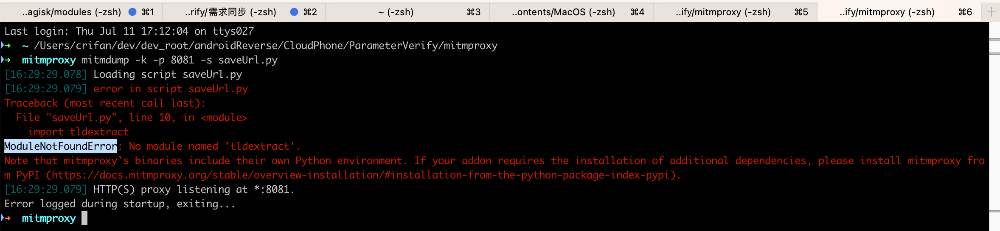

ModuleNotFoundError No module named
现象
Mac中用brew安装了mitmproxy，然后去运行：
mitmdump -p 8081 -s middleware/Save1.py
但是报错：
- 现象1
ModuleNotFoundError: No module named 'yaml' - 现象2
➜ mitmproxy mitmdump -k -p 8081 -s saveUrl.py [16:21:46.972] Loading script saveUrl.py [16:21:46.973] error in script saveUrl.py Traceback (most recent call last): File "saveUrl.py", line 10, in <module> import tldextract ModuleNotFoundError: No module named 'tldextract'. Note that mitmproxy's binaries include their own Python environment. If your addon requires the installation of additional dependencies, please install mitmproxy from PyPI (https://docs.mitmproxy.org/stable/overview-installation/#installation-from-the-python-package-index-pypi).- 
原因
- 概述：mitmdump（即mitmproxy）中的Python环境中没有安装该Python库
- 详解
- Mac中通过
brew安装的mitmproxy，会调用自己内部安装的python（此处是3.7.5） - 而不是Mac中自己python（
2.7或3.8）- 注：此时
Mac中所有版本的Python中都安装过yaml了
- 注：此时
- 而
mitmproxy中python，没有安装过yaml，所以上述脚本会报错。
- Mac中通过
解决办法
解决办法1
不要用brew安装，而是用系统中的python的pip去安装mitmproxy
pip install mitmproxy
注：系统中的python是,此处是用的3.8，用pyenv设置全局为3.8
另外此处2.7的python中，pip安装mitmproxy会失败。
之后即可正常调用
mitmdump -p 8081 -s middleware/Save1.py
其中python解析器用的是此处系统的python了，因此可以正常找到（系统中python中已安装的）yaml，而不会报错了。
具体细节详见：
- 【基本解决】Mac中mitmdump运行命令报错：in script py No module named yaml
解决办法2
如果上述办法不生效，则：
根本原因
mitmdump（即mitmproxy）内部自带了一个自己的Python环境
即：mitmdump（即mitmproxy）中的Python，和系统的Python，不是同一个
根本解决办法
给mitmproxy中能识别第三方Python库==给mitmproxy中安装第三方Python库
具体步骤
可以用官网推荐的pipx
（1）安装pipx
brew install pipx
pipx ensurepath
sudo pipx ensurepath --global
（2）用pipx安装mitmproxy
pipx install mitmproxy
（3）给mitmproxy中安装（插入）第三方Python库
mitmproxy pipx inject mitmproxy tldextract
（4）【可选，但很重要】确保此时你的终端=环境变量中，第一个找到的=实际生效的mitmproxy，是pipx所安装的
此处的意思是
前面通过pipx安装的mitmproxy后
pipx install mitmproxy
会提示你实际生效的位置，mitmproxy所在的PATH是哪个
此处是提示：
➜ mitmproxy pipx install mitmproxy
⚠️ Note: mitmdump was already on your PATH at /usr/local/bin/mitmdump
⚠️ Note: mitmproxy was already on your PATH at /usr/local/bin/mitmproxy
⚠️ Note: mitmweb was already on your PATH at /usr/local/bin/mitmweb
installed package mitmproxy 10.3.1, installed using Python 3.12.4
These apps are now globally available
- mitmdump
- mitmproxy
- mitmweb
⚠️ Note: '/Users/crifan/.local/bin' is not on your PATH environment variable. These apps will not be globally accessible until your PATH is updated. Run `pipx
ensurepath` to automatically add it, or manually modify your PATH in your shell's config file (e.g. ~/.bashrc).
done! ✨ 🌟 ✨
中的
/Users/crifan/.local/bin
所以你后续要确保：
后续终端命令行中，所找到的mitmproxy，是我们希望的：
用pipx安装的，插入安装了第三方Python库的）mitmproxy
而实现这个目的的典型方式是：
- 把此处对应的路径
/Users/crifan/.local/bin加到环境变量PATH中去 - 且确保在前面（如果你本身PATH中其他的在前面的路径已经包含了，另外别的方式安装的mitmproxy）
- 就像我此处：之前已经通过brew和pip安装了mitmproxy了，对应别的路径（
/usr/local/bin/、/opt/homebrew/bin/）就会包含mitmproxy
- 就像我此处：之前已经通过brew和pip安装了mitmproxy了，对应别的路径（
此处具体处理方式就是：
编辑启动脚本（此处是：~/.zshrc）
vim ~/.zshrc
把 /Users/crifan/.local/bin 加到PATH的最开始
# Created by `pipx` on 2024-07-14 08:54:02
#export PATH="$PATH:/Users/crifan/.local/bin"
export PATH="/Users/crifan/.local/bin:$PATH"
[可选]再去让当前终端生效
source ~/.zshrc
详见：
后记：
然后再去查看对应的mitmdump，可以看到，有多个路径，且第一个是我们希望的版本：
➜ mitmproxy where mitmdump
/Users/crifan/.local/bin/mitmdump
/usr/local/bin/mitmdump
/opt/homebrew/bin/mitmdump
/usr/local/bin/mitmdump
/Users/crifan/.local/bin/mitmdump
/Users/crifan/.local/bin/mitmdump
mitmdump即可正常运行：
mitmdump -k -p 8081 -s saveUrl.py
而不报错了